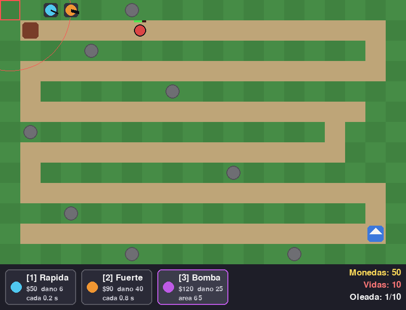

- Enemigos: rojos normales, amarillos rápidos, grises tanques.
- 3 torres: Rápida (celeste, $50), Fuerte (naranja, $90) y Bomba (morada, $120, daña en área).
- 10 oleadas cada vez más duras, 10 vidas, monedas por cada enemigo.
- Pantalla de ganaste / perdiste.
Necesita: Python 3 + pygame · Linux, Windows y Mac
⬇ Descargar .zip (9 KB) 🎮 Jugar en el navegador▶️ Cómo jugar
- Descarga y descomprime el zip.
- Instala pygame:
pip install pygame - Corre
python3 torres.py(en Windows:python torres.py; en Linux/Mac también sirve./jugar.sh).
🎮 Controles
| 1 / 2 / 3 o clic en las tarjetas | elegir torre |
| Clic izquierdo | poner torre |
| Clic derecho | vender torre |
| ESPACIO | lanzar la oleada |
| R | reiniciar |
| ESC | salir |
⌨️ Cambiar los controles
Abre controles.txt (está junto a torres.py) y cambia la tecla después del =. Así viene de fábrica:
torre1 = 1 torre2 = 2 torre3 = 3 oleada = space reiniciar = r salir = escape
Nombres válidos: letras (a, b...), flechas (up, down, left, right), space, return, tab, left shift, left ctrl y números. Si escribes una tecla que no existe, el juego avisa y usa la de siempre.
✏️ Haz tu propio nivel
Los niveles están en camino.txt. Son dibujos de texto: cada letra es un cuadrito.
. | pasto (aquí puedes construir) |
= | camino |
S | donde salen los enemigos |
B | tu base |
# | roca (no se puede construir) |
Edita el dibujo, guarda, y corre: python3 torres.py mi_mapa.txt
- El camino
=tiene que conectar la S con la B. - Mientras más largo el camino, más tiempo tienen tus torres para disparar.